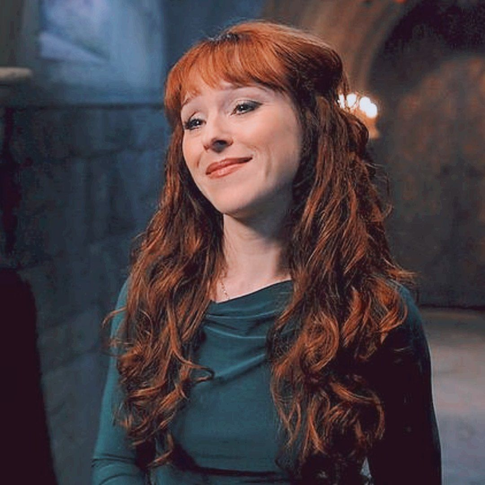

Rowena MacLeod é uma poderosa bruxa escocesa e mãe de Crowley, o Rei do Inferno. Extremamente inteligente, manipuladora e ambiciosa, ela sobreviveu por séculos através de feitiços de proteção e rejuvenescimento. Inicialmente apresentada como uma vilã, Rowena eventualmente se torna uma aliada (a contragosto) dos Winchesters.
Ao longo de sua trajetória, ela se transforma de egoísta e egocêntrica para alguém capaz de sacrifícios genuínos. Sua jornada culmina de forma épica, onde ela finalmente assume o controle do Inferno — não como tirana, mas como alguém que entende o equilíbrio entre poder e compaixão.
Rowena MacLeod
História de Origem
Habilidades e Poderes
- Magia ancestral e feitiçaria avançada
- Imortalidade (através de feitiços)
- Necromancia e encantamentos poderosos
- Manipulação de demônios e rituais infernais
- Resistência a ataques angelicais
Relações
- Crowley - seu filho, com relação intensa e conflituosa
- Sam e Dean Winchester - de inimiga a aliada improvável
- Feiticeiras e o Grande Conselho - desafiante das tradições
- Inferno - eventual Rainha do Submundo